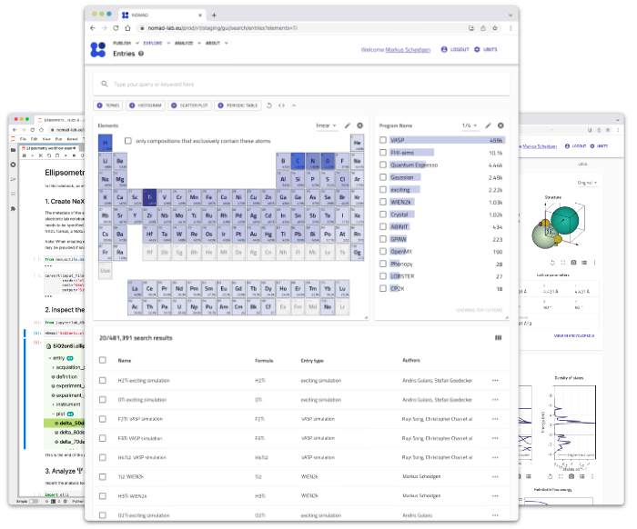
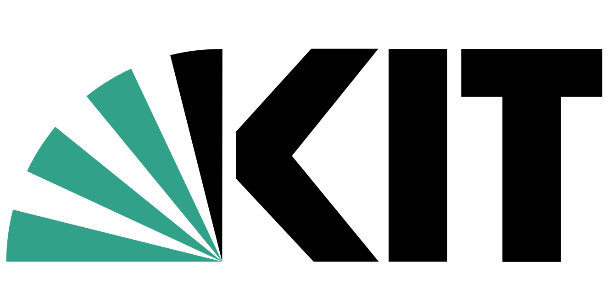
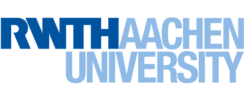
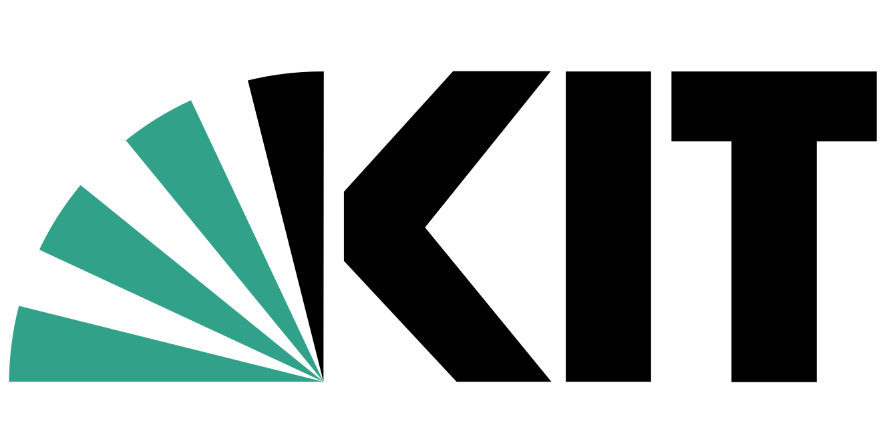
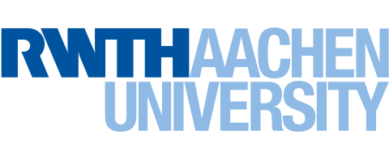

used by thousands of materials scientist already
uploaded entries 12.323.712
covered materials 3.523.792
uploaded raw files 59.3 TB
Use-cases
More than sharing files
NOMAD processes your files to extract structured data and rich meta-data. It provides a unified way to Find, Access, Interoperate with, and Re-use millions of FAIR data from different codes, sources, and workflows.
cloud_upload
Publish
Enable your peers to re-use your data in a common and structured way.
- Extracts data from 60+ formats
- Incrementally create datasets
- Customizable ELNs
- DOIs for published data
search
Explore
Heterogenous data with one interface, one format, and one license.
- Search based on rich metadata
- Data preview and visualization
- Download files or processed data
- All data under CC-BY-4.0

NOMAD & NOMAD Oasis
Reaearch data management for your group
Combine NOMAD and NOMAD Oasis to implement research data management. NOMAD Oasis gives you full control over your group's data, it lets you integrate all your data sources, and it runs your own analysis tools. We are working on a long term archival feature that lets you publish selected data directly from your Oasis to NOMAD.
NOMAD
An open and free service for the community that lets you manage, share, and publish data.
- Privately manage a limited number of uploads
- Publish data to the whole community
- We archive your data and give you a DOI
- Access all published data
- You do not need to install or host anything
NOMAD Oasis is used by research groups at:


  
 